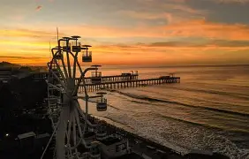

Vacaciones ideales
¿Cómo serian las Vacaciones ideales en El Salvador?
 Conocer mas sobre El Salvador
Conocer mas sobre El Salvador
Un lugar hermoso donde se disfruta con amigos y familia
Para una buena caminata para ver un hermoso lugar turistico muy conocido por los salvadoreños

Pero si eso es agotador, tambien esta la opción de otros lugares muy relajantes y entretenidos

Para conocer mas lugares turisticos visite
Lugares recomendados